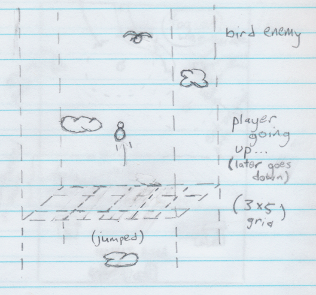
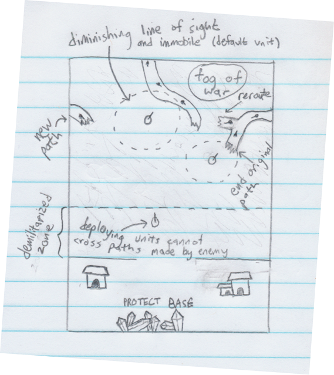
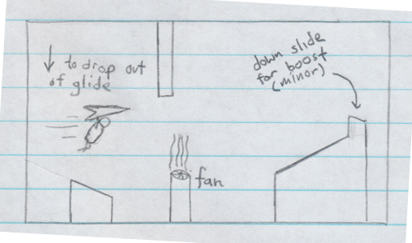

Final game ideas by Jared Moore. In no particular order.
What goes up must come down

Climb as high as you can, then fall as fast as you can. Whether playing with a time-restriction or for longevity, overall score is determined by both climbing and falling performance. Make sure you don't forget the path up, because you'll be seeing it again.
Desire Paths

A war is waging on and the opponents are smarter than anticipated. Enemies take (or make) the path of least resistence and will back down from a fight they cannot win. To make matters worse for your defense, a thick fog has covers the battlefield.
Slide N' Glide

A 2D side-scrolling endless runner, generating an obstacle course. Gliding may be the safest option, but is not always the fastest. Player controls inspired by Knuckles from the Sonic series (with the addition of sliding); Course layout inspired by Dorito's Crash Course.